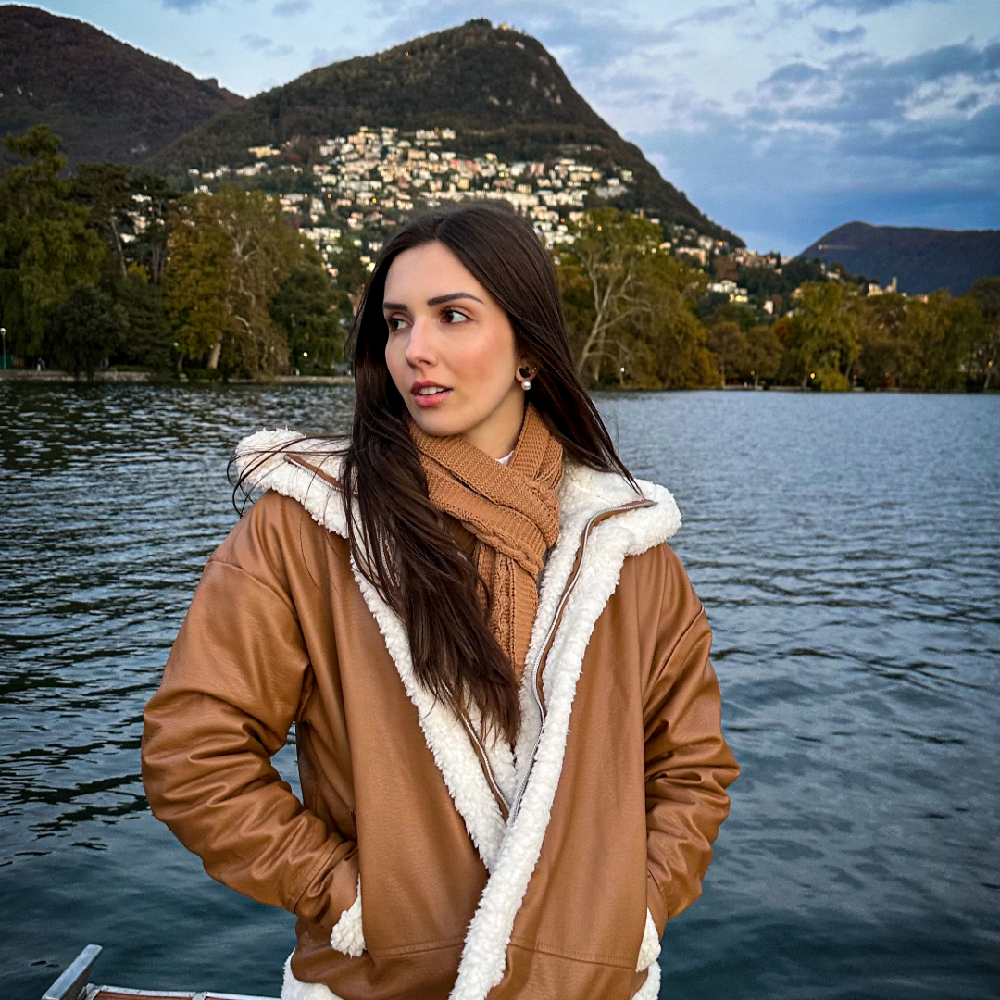

Sobre
Sempre tive um grande interesse pela área da comunicação. Durante quatro anos, me dediquei ao teatro e, atualmente, estou no 5º semestre do curso de Jornalismo na Universidade Regional de Blumenau (FURB). Além dos estudos, também estou envolvida no projeto de extensão "Informação e Cidadania", onde escrevo roteiros para programetes informativos.